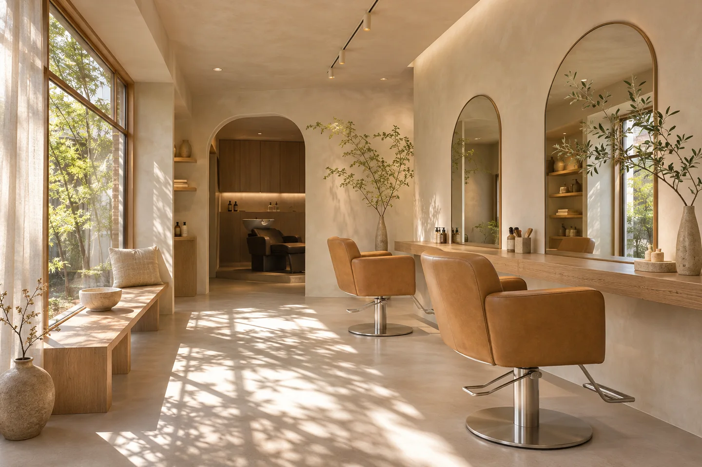
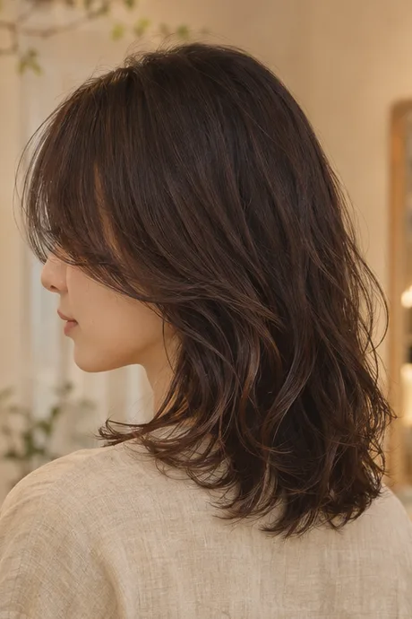
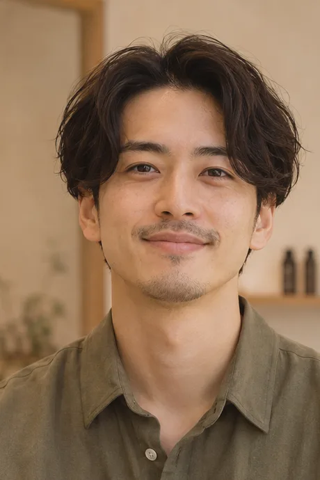

AKARI SETO
瀬戸 灯
顔まわりのレイヤーと柔らかなベージュカラーが得意です。結んだ日にもバランスよく見えるよう、短い毛束の長さまで一緒に決めていきます。


THE SALON
ルメは、自然光の入る小さなヘアサロンです。髪のクセも、朝の支度にかけられる時間も、一人ひとり違うから。カウンセリングでは、普段の髪の扱い方からお聞きします。
乾かすだけで形になるカット。肌になじみ、色落ちまで楽しめるカラー。鏡の前を離れてからも心地よく過ごせるスタイルを、一緒に考えます。
OUR STYLISTS
髪の悩みも、うまく言葉にできないイメージも、お聞かせください。
AKARI SETO
顔まわりのレイヤーと柔らかなベージュカラーが得意です。結んだ日にもバランスよく見えるよう、短い毛束の長さまで一緒に決めていきます。

REN TAKASE
クセを活かしたショートやボブが得意です。いつもの乾かし方で形をつくれるよう、髪の生え方や毛流れを見ながらカットします。
ACCESS
木漏日駅 東口から徒歩約5分
東口を出て並木通りを直進。小さな公園の角を左に曲がると、右手にLUMÉがあります。